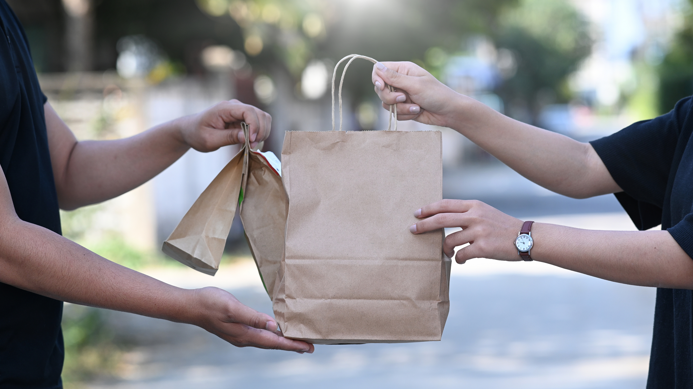
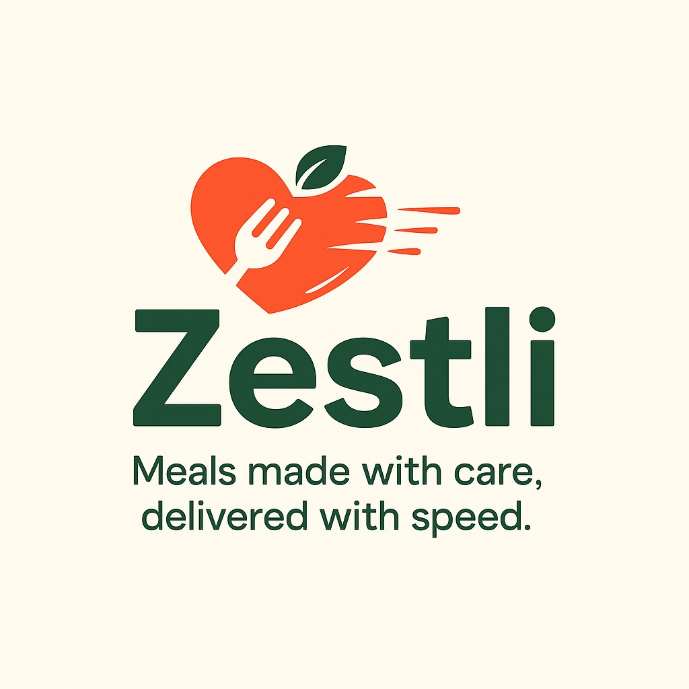
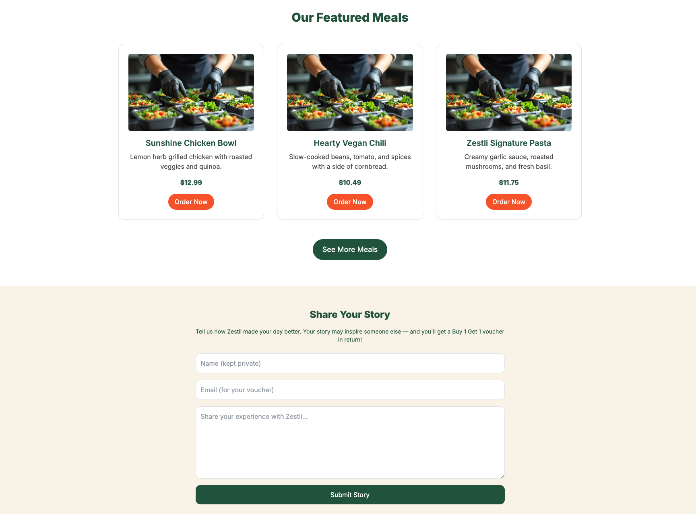
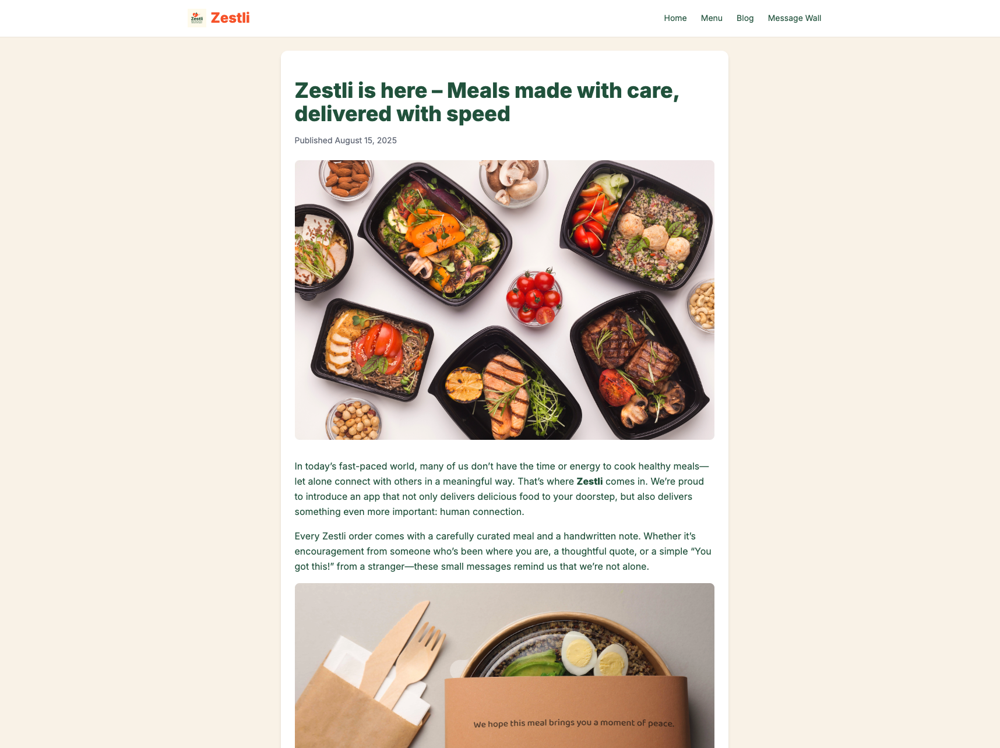
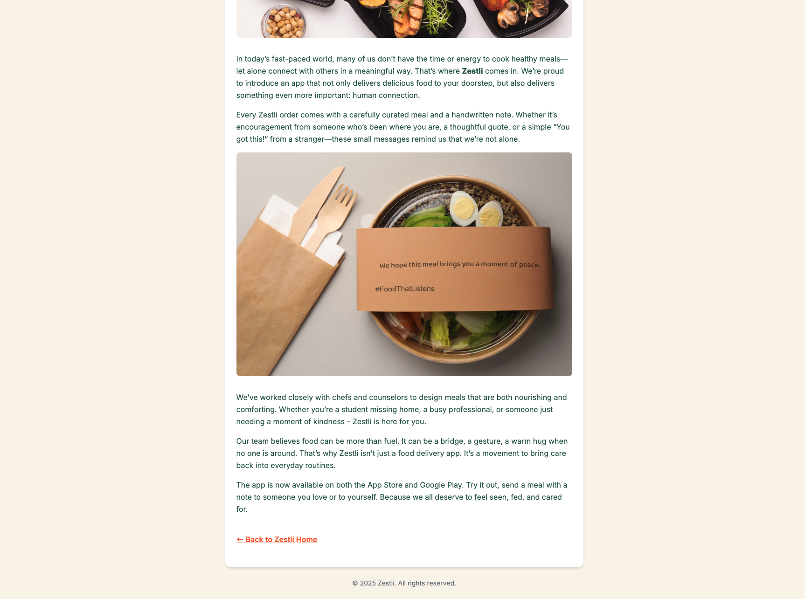
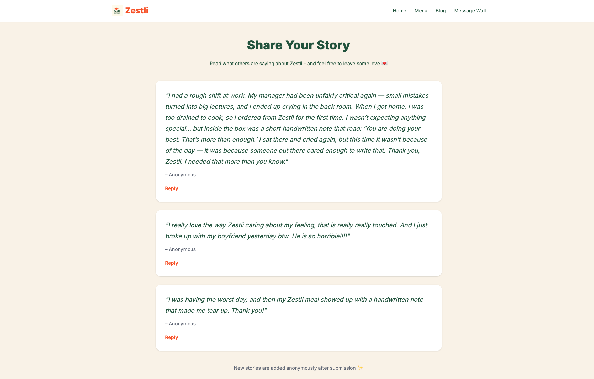

Zestli is a static website concept for a healthy food delivery service that combines convenience with emotional connection. Unlike typical food delivery platforms, Zestli focuses not only on speed, but also on care through small handwritten-style notes included with each order. This project explores how branding, user experience, and front-end development can work together to communicate warmth, trust, and community in a competitive market.
GOALS
The goal of this project was to design and build a responsive front-end website that introduces Zestli’s brand concept, promotes its healthy meal service, and highlights its emotional value. It was also created to demonstrate how a static website could still communicate a strong brand story through layout, interactivity, and content structure.
✦
PROBLEM
Most food delivery platforms prioritize speed and convenience, but often feel cold and transactional. At the same time, many users—especially busy professionals, international students, and people living away from family—lack small daily moments of care and emotional connection. Zestli was created to bridge that gap by combining fresh meal delivery with thoughtful personal touches.
CONCEPT
Zestli combines healthy ready-to-eat meals, handwritten-style notes, and a community-oriented Message Wall to transform food delivery into a warmer and more emotionally engaging experience. Instead of feeling like just another ordering platform, the website introduces Zestli as a brand that values care, comfort, and human connection.
✦
TARGET AUDIENCE
Zestli is designed primarily for busy professionals, international students, independent workers, and health-conscious users who value convenience but also appreciate quality, care, and small emotional details in their everyday routines.
UX STRATEGY
The website structure was designed to clearly communicate the brand’s identity and guide users through an approachable, story-driven experience. The Home page introduces Zestli’s message and benefits, the Menu helps users visualize meals, the Blog supports storytelling, and the Message Wall encourages community engagement. The overall UX direction prioritizes warmth, clarity, and emotional resonance.
✦
DEVELOPMENT
This project was developed using HTML, Tailwind CSS, and JavaScript. The development process focused on structuring semantic HTML before styling, using Tailwind CSS to create a consistent visual system, and implementing JavaScript to enhance interactivity and engagement. The final result balances storytelling and functionality while maintaining a clean and responsive front-end structure.
FEATURES
Key front-end features include responsive layout behavior, dynamic content flow, improved usability through interactive sections, and a structure that supports storytelling while remaining easy to navigate. JavaScript was used to make the experience feel more active and engaging beyond a purely static presentation.
HTMLTailwind CSSJavaScript
✦
PROCESS VISUALS



✦
FINAL OUTCOME



✦
REFLECTION
This project strengthened my understanding that front-end work can communicate emotion as much as function. Through Zestli, I learned how brand storytelling, user needs, and interface structure can work together to shape a more meaningful digital experience. It also helped me grow more confident in using HTML, Tailwind CSS, and JavaScript to turn a concept into an interactive website.
✦
MORE WORKS IN
Packaging Vintage Jungle
Vintage Jungle is a fictional chocolate branding project that combines nostalgic jungle-inspired visuals with bold packaging, focusing on storytelling and strong shelf presence as its core values.
Aura Tint is a lipstick branding project centered on unconventional shades, encouraging individuality and self-expression through a visual identity that balances softness and confidence as its core brand values.


.png)
.png)